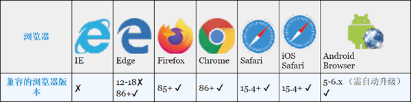
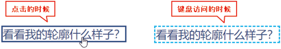
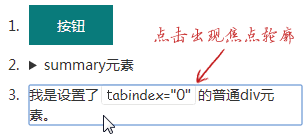

首页 > 编程笔记
CSS :focus-visible伪类选择器详解
CSS :focus-visible 伪类虽然和 :focus-within 伪类看起来很相似，但两者的作用大相径庭，被浏览器开始支持的时间也有较大区别：:focus-within 伪类已被浏览器支持很多年了，而 :focus-visible 伪类则在 2022 年 3 月才被所有现代浏览器支持，详见表 1。
是不是很拗口？规范就是这么定义的。:focus-visible 的规范并没有强行约束匹配逻辑，而是交给了 UA（也就是浏览器）。我们将通过真实的示例来解释这个伪类是做什么用的。
在所有现代浏览器下，鼠标点击链接元素 <a> 的时候是不会出现焦点轮廓的，但是使用键盘访问的时候会出现。点击链接元素时只会触发 :focus 伪类，而键盘访问此链接元素时不仅会触发 :focus 伪类，还会触发 :focus-visible 伪类。
例如下面这段测试代码：
这就是 :focus-visible 伪类的作用，可以用来区分用户的操作是鼠标点击，还是键盘访问。
不过，这种判断并不完全准确，因为 :focus-visible 伪类匹配与否是浏览器自行决定的，没有特定的规范。目前看来，浏览器会出现默认轮廓的场景都会匹配 :focus-visible 伪类。
在 Chrome90 版本之前的浏览器下，有些元素的焦点轮廓就算是在点击操作下也会出现的。包括下面这些场景：
在 Chrome 浏览器下点击鼠标的时候，以上 3 种场景中也会出现明显的焦点轮廓，如下图所示。
这其实是我们不希望看到的，因为点击鼠标是目标明确的主动操作，此时出现轮廓是没有必要的，反而让操作界面变得难看了。
但是，又不能简单地通过设置 outline:none 来处理，因为这样会使使用键盘访问时应当出现的焦点轮廓被隐藏，从而带来严重的无障碍访问问题。
在这种场景下，:focus-visible 伪类可谓天降神兵，只需要一条短短的 CSS 规则就可以兼顾视觉表现和无障碍访问：
当然，由于现在的 Chrome 浏览器和 Safari 浏览器默认点击 <button> 按钮或者 <summary> 元素时都不会出现轮廓，因此，:focus-visible 伪类的作用就没有以前那么明显了。准确地说是浏览器自己优化了之前的一些无障碍访问策略，使得无须使用 :focus-visible 伪类手动进行相关的优化了。
:focus-visible 伪类目前的作用就变成了用来区分用户行为是鼠标行为还是键盘行为。

表 1 :focus-visible伪类的兼容性
表 1 :focus-visible伪类的兼容性
:focus-visible伪类的作用及背景变化
:focus-visible 伪类匹配的场景是元素聚焦，同时浏览器认为聚焦轮廓应该显示。是不是很拗口？规范就是这么定义的。:focus-visible 的规范并没有强行约束匹配逻辑，而是交给了 UA（也就是浏览器）。我们将通过真实的示例来解释这个伪类是做什么用的。
在所有现代浏览器下，鼠标点击链接元素 <a> 的时候是不会出现焦点轮廓的，但是使用键盘访问的时候会出现。点击链接元素时只会触发 :focus 伪类，而键盘访问此链接元素时不仅会触发 :focus 伪类，还会触发 :focus-visible 伪类。
例如下面这段测试代码：
<a href class="link">看看我的轮廓什么样子？</a>
.link:focus {
outline: dotted;
}
.link:focus-visible {
outline: dashed deepskyblue;
}
结果点击链接元素的时候，链接的轮廓是粗实线，而使用键盘访问的时候（例如使用 Tab 键索引）则是天蓝色虚线，如图 1 所示。

图 1 不同交互行为下不同的轮廓效果
图 1 不同交互行为下不同的轮廓效果
这就是 :focus-visible 伪类的作用，可以用来区分用户的操作是鼠标点击，还是键盘访问。
不过，这种判断并不完全准确，因为 :focus-visible 伪类匹配与否是浏览器自行决定的，没有特定的规范。目前看来，浏览器会出现默认轮廓的场景都会匹配 :focus-visible 伪类。
在 Chrome90 版本之前的浏览器下，有些元素的焦点轮廓就算是在点击操作下也会出现的。包括下面这些场景：
- 设置了背景的 <button> 按钮；
- HTML5 中的 <summary> 元素；
- 设置了 HTML tabindex 属性的元素。
在 Chrome 浏览器下点击鼠标的时候，以上 3 种场景中也会出现明显的焦点轮廓，如下图所示。

图 2 鼠标点击设置了tabindex属性的元素时出现焦点轮廓
图 2 鼠标点击设置了tabindex属性的元素时出现焦点轮廓
这其实是我们不希望看到的，因为点击鼠标是目标明确的主动操作，此时出现轮廓是没有必要的，反而让操作界面变得难看了。
但是，又不能简单地通过设置 outline:none 来处理，因为这样会使使用键盘访问时应当出现的焦点轮廓被隐藏，从而带来严重的无障碍访问问题。
在这种场景下，:focus-visible 伪类可谓天降神兵，只需要一条短短的 CSS 规则就可以兼顾视觉表现和无障碍访问：
:focus:not(:focus-visible) {
outline: 0;
}
此时，无论对于 <summary> 元素还是设置了 tabindex 属性的元素，在点击的时候都不会出现轮廓，同时，键盘访问时的 outline 轮廓依然保留，两全其美。当然，由于现在的 Chrome 浏览器和 Safari 浏览器默认点击 <button> 按钮或者 <summary> 元素时都不会出现轮廓，因此，:focus-visible 伪类的作用就没有以前那么明显了。准确地说是浏览器自己优化了之前的一些无障碍访问策略，使得无须使用 :focus-visible 伪类手动进行相关的优化了。
:focus-visible 伪类目前的作用就变成了用来区分用户行为是鼠标行为还是键盘行为。
关注公众号「站长严长生」，在手机上阅读所有教程，随时随地都能学习。内含一款搜索神器，免费下载全网书籍和视频。

微信扫码关注公众号